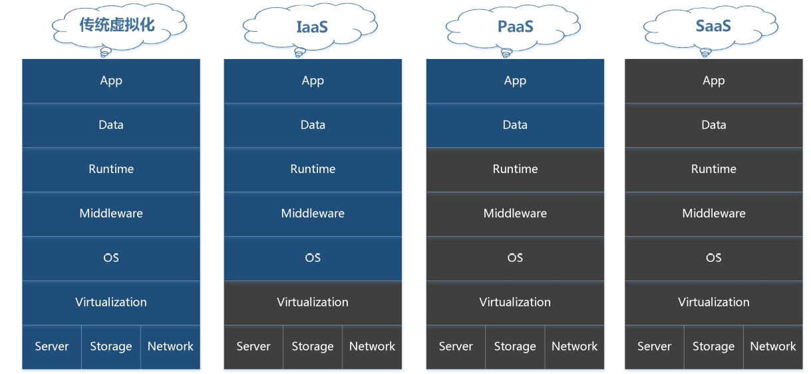
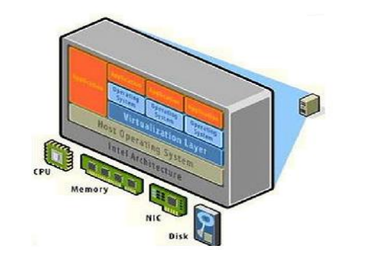

云计算¶
一、计算资源使用方式¶
1.1 主机资源使用方式¶
在云计算出现之前，常用的主机资源使用方式有：
- 自己购买物理机
- IDC托管物理机
- IDC租用物理机
- 虚拟机
- 虚拟主机
1.2 传统资源管理方式¶
1.2.1 资源方面¶
- 初期投入/后期维护成本高
- 后期资源闲置浪费
1.2.2 人力方面¶
- 纯手工操作，自动化能力差
- 技术水平限制，资源分配不合理
1.2.3 最终效果¶
- 人力物力成本大
- 资源利用率低
二、为什么要用云计算¶
2.1 对提供商而言¶
- 海量资源动态管理
- 资源灵活调配
- 资源高效率使用
- 技术团队高效使用
2.2 对客户而言¶
- 使用方式多：通过网络访问，服务无处不在
- 投入成本低：按需使用的自助服务，资源可以弹性伸缩
三、云计算历史¶
2006年 Google提出"云计算"概念 2009年 美日韩将其纳入政府议程 2010年 中国将其纳入战略性产业，云计算开始在中国进入迅速发展期 2013年 政府工信部发布基于云计算的政务平台设计指南 2015年 云计算脱离争论不休和宣扬阶段，开始进入落地实施阶段
四、云计算定义¶
4.1 从表现形式定义¶
- 底层由物理硬件构建出一个环境，在这个环境上运行一个操作系统，对终端用户而言，当我们需要用到一个操作系统或应用实现特殊功能时，它只需要向CloudOS提出申请而就能够立即申请获取一个对应的请求环境，这个环境我们可以随时终止，开启等功能。
- 对于用户而言，无需关心它所需要的计算能力从哪里来，有别于传统使用计算机操作系统的状况(看得见、摸得着)
4.2 从具体应用定义¶
- 云计算是一种资源交付的模式，即打包资源给客户使用。
- 它的特点是：基于网络、按需付费、弹性拓展。
- 云服务提供商基于有效的网络通信对所有资源进行统一管理，客户对使用的计算资源按需付费，计算资源使用过程中支持弹性拓展，客户只需投入很少的管理工作就可以高效率的使用计算资源。
五、云计算实现方式¶

5.1 传统/私有方式¶
优点：所有事情都亲自做，可控 缺点：用户成本比较高，要求自身技术水平高 典型软件：传统物理主机
5.2 Iaas¶
IaaS（基础设施即服务）
- 优点：底层硬件到操作系统，都不需要用户操心，省事，可以集中精力做业务项目。
- 缺点：服务商提供的东西，非自己自由定制，所以不可控
- 典型软件：OpenStack，CloudStack
5.3 PaaS¶
PaaS（平台即服务）
Management 是 云计算实现的一种方式，因为包含众多组件，所以也有人称之为Cloud OS
- 优点：我不会运维，我只会开发，底层到运行环境，都不需要用户操心，省事，可以集中精力做应用项目
- 缺点：服务商提供的东西，定制太强，不灵活，只适用于特殊的应用项目，
- 典型软件：Docker、Rocket、Openshift...
5.4 SaaS¶
SaaS（软件即服务）
- 优点：所有东西都由服务商提供，自己只需要花钱使用就行了，对于广大(大中小)企业来说，SaaS是采用先进技术实施信息化的最好途径。例如：企业邮箱服务，财务软件云服务
- 缺点：对客户来说，所有东西都不可控，安全不安全，看情况
六、云计算应用分类¶

6.1 公有云¶
- 普遍性
- 用户按需使用，成本低廉，管理方面。
- 用户的数据保存在公有云的提供商那里，从技术上来讲，数据安全是没有办法保证的，这能从业务层面上来看待。
- 比如：银行不用公有云
- 举例：亚马逊、阿里云、openstack
6.2 私有云¶
- 专用性
- 所有资源都自己提供，安全有保障
- 技术/人力/业务成本高昂，资源利用效率低。
- 举例：vmware、企业云。。。
6.3 混合云¶
- 协调性
- 核心业务用私有云，临时需求/轻量级业务需求使用公有云
- 成本的最优使用效率
七、虚拟化与云计算¶

7.1 虚拟化¶
- 虚拟化是一种技术，它的目的在于提高资源的使用率，并将底层硬件和上层的应用软件进行隔离，使得上层软件及应用计算变得更加弹性可控。最终达到有限成本的高价值。
- 默认情况下，虚拟化技术默认并不对外提供使用抽象的上层应用软件服务组件，一个没有被服务化的虚拟化环境只能被称为"资源池"，只有内部管理人员才可以操作。
7.2 云计算¶
云计算是以虚拟化技术为核心技术和基础，面向服务架构(SOA)的一种实现,将虚拟化环境"资源池"隐藏起来，将其上层 应用软件形成丰富的云管理接口，达到所有人自由使用所有资源的一种现象，它是一种资源使用模式的变革。
虚拟化是一种技术，云计算是一种计算资源交付模式。